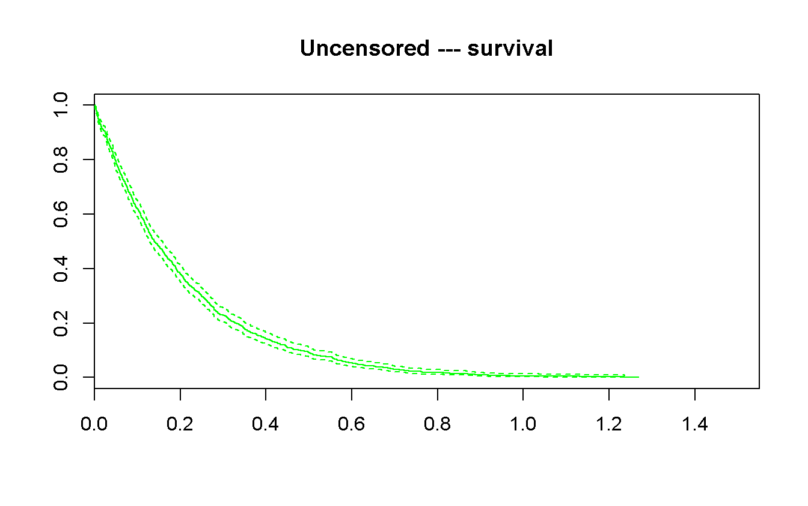
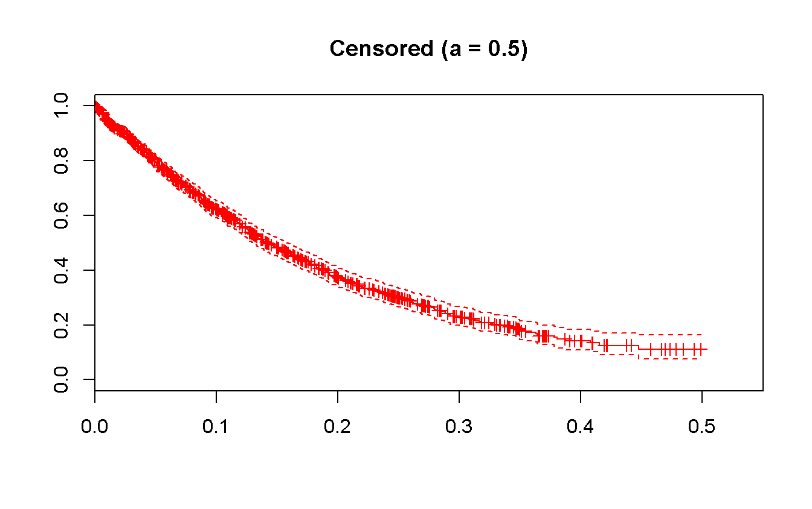
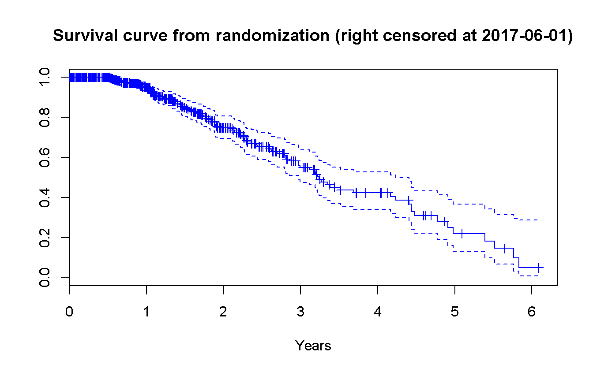

Chapter 1 Monday: Introduction to Survival Analyses and simulation of data
1.1 Key (operative) concepts
- Time has asymmetric density and can be censored:
- not possible to summarize it by the means
- cannot be normal distributed
- use exponential family
Plot the log-plot to check the distribution assumptions
- Censoring can be:
- Right: event not (yet) occurred at f-up
- Fixed (identical f-up for anyone)
- Sequential (\(min(T_i, C_i)\))
- Random
- Left: the event has occurred before the observed period (all population but not all information, e.g. menarche date)
- Interval: the event can be occurred between two times (but don’t know when)
- Left truncated: starting point is after the beginning (different from Left, all the information but not complete population)
- Models:
- statistical: non-informative censoring (Kaplan-Meier, Cox model, …)
- probabilistic: independent censoring (life tables)
- parametric (
survival::survreg(), need to define the distribution) VS non-parametric (survival::survfit()orrms::npsurv(), no need to define distribution)
1.2 Simulated Data
- Simulate a sample of \(n = 100\) or \(1000\) exponential survival times, w/ mean \(\theta = 5\).
- Non censored
set.seed(171002)
n <- c(thousand = 1000) # samples
t <- rexp(n, rate = 5) # random exponential times
status_no_cens <- rep(1, times = n) # no censored data --> all are cases- Uniform censoring over \([0, a]\), w/ \(a = 1, a = 0.5\) or \(a = 2\)
a <- c(cens_05 = 0.5) # upper bound of the uniform censoring dist
cens <- runif(n, min = 0, max = a) # censored times
t_cens <- pmin(t, cens) # censored times are earlier than event times
status_cens <- status_no_cens - (t_cens == cens) # remove censored cases- Plot the observed survival times
- Non censored and censored
# NOTE: for the plots to be comparable, xlim and ylim have to be the same range
# for both the plots. Moreover to drow well adjusted plots, they were set
# a posteriori.
hist(t,
main = 'Hystogram of uncensored times',
col = 'green',
xlim = c(0, 1.5),
ylim = c(0, 400),
labels = TRUE # add the labels over the top of the bars
)
hist(t_cens,
main = 'Hystogram of censored times (a = 0.5)',
col = 'red',
xlim = c(0, 1.5),
ylim = c(0, 400),
labels = TRUE
)- Parametric estimation of survival function
- Uncensored
# `?survreg` := "Regression for a Parametric Survival Model"
#
# R formula: y ~ x <--> math formula: y = f(x)
#
# Here we want to model the response (labelled time) as they are, w/out any
# furter investigation on the effect on them from some other variable
survreg(Surv(t, status_no_cens) ~ 1,
dist = 'exponential'
) %>%
summary # here `summary()` add some more statistics to the standard output##
## Call:
## survreg(formula = Surv(t, status_no_cens) ~ 1, dist = "exponential")
## Value Std. Error z p
## (Intercept) -1.58 0.0316 -50.1 0
##
## Scale fixed at 1
##
## Exponential distribution
## Loglik(model)= 584.3 Loglik(intercept only)= 584.3
## Number of Newton-Raphson Iterations: 4
## n= 1000- Censored
survreg(Surv(t_cens, status_cens) ~ 1,
dist = 'exponential'
) %>%
summary##
## Call:
## survreg(formula = Surv(t_cens, status_cens) ~ 1, dist = "exponential")
## Value Std. Error z p
## (Intercept) -1.57 0.0401 -39.2 0
##
## Scale fixed at 1
##
## Exponential distribution
## Loglik(model)= 355.9 Loglik(intercept only)= 355.9
## Number of Newton-Raphson Iterations: 4
## n= 1000- Non parametric estimation of survival and the distribution functions
- Uncensored
# `?survfit` := "Create survival curves"
survfit(Surv(t, status_no_cens) ~ 1)## Call: survfit(formula = Surv(t, status_no_cens) ~ 1)
##
## n events median 0.95LCL 0.95UCL
## 1000.000 1000.000 0.140 0.128 0.158# Here we would like to compare to approach to survival plots:
# 1. Using the packege _survival_, so the standard one
# 2. Uisng the package _rms_, a comprehensive package for regression analyses
# Using survival `plot` provided by the _survival_ package
# (`?survival:::plot.survfit`), we can continue to
# use the `survfit()` function for nonparametric survival estimation from the
# same _survival_ package
survfit(Surv(t, status_no_cens) ~ 1) %>%
plot(
xlim = c(0, 1.55),
conf.int = TRUE,
mark.time = TRUE,
col = 'green',
main = 'Uncensored --- survival'
)
# Using the survplot from the _rms_ package (`survplot`), we have to switch to
# the `npsurv()` function for nonparametric survival estimation from the _rms_
# package
npsurv(Surv(t, status_no_cens) ~ 1) %>%
survplot(
xlim = c(0, 1.5),
conf.int = TRUE,
n.risk = TRUE,
col = 'green'
)
title(main = 'Uncensored --- rms') # unfortunally survplot do not have an
# integrated option for the title...
- censored
survfit(Surv(t_cens, status_cens) ~ 1)## Call: survfit(formula = Surv(t_cens, status_cens) ~ 1)
##
## n events median 0.95LCL 0.95UCL
## 1000.000 623.000 0.141 0.130 0.158survfit(Surv(t_cens, status_cens) ~ 1) %>%
plot(
xlim = c(0, 0.55),
conf.int = TRUE,
mark.time = TRUE,
col = 'red',
main = 'Censored (a = 0.5)'
)
npsurv(Surv(t_cens, status_cens) ~ 1) %>%
survplot(
xlim = c(0, 0.5),
conf.int = TRUE,
n.risk = TRUE,
col = 'red'
)
title(main = 'Censored (a = 0.5) --- rms')
1.3 mgus data from survival package
- Load and explore data
data(mgus) # load
head(mgus) # first 10 rows## id age sex dxyr pcdx pctime futime death alb creat hgb mspike
## 1 1 78 female 68 <NA> NA 748 1 2.8 1.2 11.5 2.0
## 2 2 73 female 66 LP 1310 6751 1 NA NA NA 1.3
## 3 3 87 male 68 <NA> NA 277 1 2.2 1.1 11.2 1.3
## 4 4 86 male 69 <NA> NA 1815 1 2.8 1.3 15.3 1.8
## 5 5 74 female 68 <NA> NA 2587 1 3.0 0.8 9.8 1.4
## 6 6 81 male 68 <NA> NA 563 1 2.9 0.9 11.5 1.8dim(mgus) # number of rows and cols## [1] 241 12names(mgus) # name of the columns## [1] "id" "age" "sex" "dxyr" "pcdx" "pctime" "futime"
## [8] "death" "alb" "creat" "hgb" "mspike"str(mgus) # R internal structure of the object## 'data.frame': 241 obs. of 12 variables:
## $ id : num 1 2 3 4 5 6 7 8 9 10 ...
## $ age : atomic 78 73 87 86 74 81 72 79 85 58 ...
## ..- attr(*, "label")= chr "AGE AT date_on"
## $ sex : Factor w/ 2 levels "female","male": 1 1 2 2 1 2 1 1 1 2 ...
## ..- attr(*, "label")= chr "Sex"
## $ dxyr : num 68 66 68 69 68 68 68 69 70 65 ...
## $ pcdx : Factor w/ 4 levels "AM","LP","MA",..: NA 2 NA NA NA NA NA NA NA NA ...
## $ pctime: atomic NA 1310 NA NA NA NA NA NA NA NA ...
## ..- attr(*, "label")= chr "Progression to Group 4 (days)"
## $ futime: atomic 748 6751 277 1815 2587 ...
## ..- attr(*, "label")= chr "Follow-Up Time"
## $ death : num 1 1 1 1 1 1 1 1 1 1 ...
## $ alb : atomic 2.8 NA 2.2 2.8 3 2.9 3 3.1 3.2 3.5 ...
## ..- attr(*, "label")= chr "Serum Albumin"
## $ creat : atomic 1.2 NA 1.1 1.3 0.8 0.9 0.8 0.8 1 1 ...
## ..- attr(*, "label")= chr "Serum Creatinine"
## $ hgb : atomic 11.5 NA 11.2 15.3 9.8 11.5 13.5 15.5 12.4 14.8 ...
## ..- attr(*, "label")= chr "Hemoglobin"
## $ mspike: atomic 2 1.3 1.3 1.8 1.4 1.8 1.3 1.4 1.5 2.2 ...
## ..- attr(*, "label")= chr "Serum M-Spike"
## - attr(*, "formats")=List of 1
## ..$ death:List of 2
## .. ..$ values: num 0 1
## .. ..$ labels: chr "Alive" "Dead"summary(mgus) # summary from base R## id age sex dxyr pcdx
## Min. : 1 Min. :34.00 female:104 Min. :56.0 AM : 8
## 1st Qu.: 61 1st Qu.:55.00 male :137 1st Qu.:66.0 LP : 5
## Median :121 Median :63.00 Median :68.0 MA : 7
## Mean :121 Mean :62.87 Mean :67.4 MM : 44
## 3rd Qu.:181 3rd Qu.:72.00 3rd Qu.:70.0 NA's:177
## Max. :241 Max. :90.00 Max. :73.0
##
## pctime futime death alb
## Min. : 365 Min. : 6 Min. :0.0000 Min. :1.800
## 1st Qu.: 2469 1st Qu.: 2422 1st Qu.:1.0000 1st Qu.:2.900
## Median : 3778 Median : 5022 Median :1.0000 Median :3.200
## Mean : 4342 Mean : 5425 Mean :0.9336 Mean :3.204
## 3rd Qu.: 5750 3rd Qu.: 8264 3rd Qu.:1.0000 3rd Qu.:3.500
## Max. :11685 Max. :14325 Max. :1.0000 Max. :5.100
## NA's :177 NA's :31
## creat hgb mspike
## Min. :0.600 Min. : 7.40 Min. :0.300
## 1st Qu.:0.900 1st Qu.:12.20 1st Qu.:1.500
## Median :1.000 Median :13.20 Median :1.700
## Mean :1.095 Mean :13.15 Mean :1.764
## 3rd Qu.:1.100 3rd Qu.:14.50 3rd Qu.:2.000
## Max. :6.400 Max. :16.60 Max. :3.200
## NA's :43 NA's :1describe(mgus) # more comprehensive description from _Hisc_ package, loaded by## mgus
##
## 12 Variables 241 Observations
## ---------------------------------------------------------------------------
## id
## n missing distinct Info Mean Gmd .05 .10
## 241 0 241 1 121 80.67 13 25
## .25 .50 .75 .90 .95
## 61 121 181 217 229
##
## lowest : 1 2 3 4 5, highest: 237 238 239 240 241
## ---------------------------------------------------------------------------
## age : AGE AT date_on
## n missing distinct Info Mean Gmd .05 .10
## 241 0 53 0.999 62.87 13.42 44 48
## .25 .50 .75 .90 .95
## 55 63 72 78 81
##
## lowest : 34 35 36 37 38, highest: 84 85 86 87 90
## ---------------------------------------------------------------------------
## sex : Sex
## n missing distinct
## 241 0 2
##
## Value female male
## Frequency 104 137
## Proportion 0.432 0.568
## ---------------------------------------------------------------------------
## dxyr
## n missing distinct Info Mean Gmd .05 .10
## 241 0 17 0.97 67.4 3.073 61 63
## .25 .50 .75 .90 .95
## 66 68 70 70 70
##
## Value 56 58 59 60 61 62 63 64 65 66
## Frequency 1 1 5 5 2 7 7 10 10 18
## Proportion 0.004 0.004 0.021 0.021 0.008 0.029 0.029 0.041 0.041 0.075
##
## Value 67 68 69 70 71 72 73
## Frequency 24 40 45 62 2 1 1
## Proportion 0.100 0.166 0.187 0.257 0.008 0.004 0.004
## ---------------------------------------------------------------------------
## pcdx
## n missing distinct
## 64 177 4
##
## Value AM LP MA MM
## Frequency 8 5 7 44
## Proportion 0.125 0.078 0.109 0.688
## ---------------------------------------------------------------------------
## pctime : Progression to Group 4 (days)
## n missing distinct Info Mean Gmd .05 .10
## 64 177 63 1 4342 3030 1223 1409
## .25 .50 .75 .90 .95
## 2469 3778 5750 8946 10051
##
## lowest : 365 700 954 1218 1249, highest: 9723 10109 10359 11354 11685
## ---------------------------------------------------------------------------
## futime : Follow-Up Time
## n missing distinct Info Mean Gmd .05 .10
## 241 0 237 1 5425 4222 283 779
## .25 .50 .75 .90 .95
## 2422 5022 8264 11425 12140
##
## lowest : 6 7 31 32 39, highest: 12931 13019 13152 14111 14325
## ---------------------------------------------------------------------------
## death
## n missing distinct Info Sum Mean Gmd
## 241 0 2 0.186 225 0.9336 0.1245
##
## ---------------------------------------------------------------------------
## alb : Serum Albumin
## n missing distinct Info Mean Gmd .05 .10
## 210 31 26 0.995 3.204 0.5293 2.3 2.6
## .25 .50 .75 .90 .95
## 2.9 3.2 3.5 3.8 3.9
##
## lowest : 1.8 1.9 2.1 2.2 2.3, highest: 4.0 4.1 4.3 4.5 5.1
## ---------------------------------------------------------------------------
## creat : Serum Creatinine
## n missing distinct Info Mean Gmd .05 .10
## 198 43 19 0.978 1.095 0.39 0.700 0.800
## .25 .50 .75 .90 .95
## 0.900 1.000 1.100 1.300 1.615
##
## Value 0.6 0.7 0.8 0.9 1.0 1.1 1.2 1.3 1.4 1.5
## Frequency 4 13 26 42 35 29 18 12 4 4
## Proportion 0.020 0.066 0.131 0.212 0.177 0.146 0.091 0.061 0.020 0.020
##
## Value 1.6 1.7 2.0 2.5 2.6 3.5 3.6 3.7 6.4
## Frequency 1 3 1 1 1 1 1 1 1
## Proportion 0.005 0.015 0.005 0.005 0.005 0.005 0.005 0.005 0.005
## ---------------------------------------------------------------------------
## hgb : Hemoglobin
## n missing distinct Info Mean Gmd .05 .10
## 240 1 66 0.999 13.15 1.865 10.20 11.09
## .25 .50 .75 .90 .95
## 12.20 13.20 14.50 15.11 15.51
##
## lowest : 7.4 7.7 8.4 9.5 9.6, highest: 15.9 16.1 16.2 16.5 16.6
## ---------------------------------------------------------------------------
## mspike : Serum M-Spike
## n missing distinct Info Mean Gmd .05 .10
## 241 0 23 0.993 1.764 0.4687 1.1 1.3
## .25 .50 .75 .90 .95
## 1.5 1.7 2.0 2.3 2.5
##
## lowest : 0.3 0.8 0.9 1.0 1.1, highest: 2.5 2.6 2.7 2.9 3.2
## --------------------------------------------------------------------------- # the _rms_ one
mgus_df <- as_tibble(mgus) # tidy data frame (important info printed all
# together, and visualization auto-adjusted
# to the consol width)
mgus_df## # A tibble: 241 x 12
## id age sex dxyr pcdx pctime futime death alb creat hgb
## * <dbl> <dbl> <fctr> <dbl> <fctr> <dbl> <dbl> <dbl> <dbl> <dbl> <dbl>
## 1 1 78 female 68 <NA> NA 748 1 2.8 1.2 11.5
## 2 2 73 female 66 LP 1310 6751 1 NA NA NA
## 3 3 87 male 68 <NA> NA 277 1 2.2 1.1 11.2
## 4 4 86 male 69 <NA> NA 1815 1 2.8 1.3 15.3
## 5 5 74 female 68 <NA> NA 2587 1 3.0 0.8 9.8
## 6 6 81 male 68 <NA> NA 563 1 2.9 0.9 11.5
## 7 7 72 female 68 <NA> NA 1135 1 3.0 0.8 13.5
## 8 8 79 female 69 <NA> NA 2016 1 3.1 0.8 15.5
## 9 9 85 female 70 <NA> NA 2422 1 3.2 1.0 12.4
## 10 10 58 male 65 <NA> NA 6155 1 3.5 1.0 14.8
## # ... with 231 more rows, and 1 more variables: mspike <dbl>- Non parametric Kaplan-Meyer estimation of the survival function
- Estimate the survival function from randomization overall and according to sex.
survfit(Surv(futime, death) ~ 1,
data = mgus_df
) %>%
plot(
conf.int = TRUE,
mark.time = TRUE,
col = 'blue',
main = 'Survival function for mgus data'
)
survfit(Surv(futime, death) ~ sex,
data = mgus_df
) %>%
plot(
conf.int = TRUE,
mark.time = TRUE,
main = 'Survival function for mgus data according to sex',
col = c('red', 'blue'),
lty = c(2, 3)
)
legend(
x = 10000, y = 1,
legend = c("Female", "Male"),
col = c('red', 'blue'),
lty = c(2, 3)
)# For survival object the package _survminer_ provide ggplot2 plots
# (`?ggsurvplot`) which could be very interesting and quite comprehensive.
survfit(Surv(futime, death) ~ sex,
data = mgus_df
) %>%
ggsurvplot(
conf.int = TRUE, # draw confidence intervals
pval = TRUE, # show pvalue
pval.method = TRUE, # print the test name
title = 'Survival curves for overall death according to sex.',
xlab = 'Days',
legend = 'right', # legend position
legend.title = 'Sex',
legend.labs = c('Female', 'Male'),
risk.table = TRUE, # admits interesting options other than TRUE
cumcensor = TRUE,
cumevents = TRUE,
pval.size = 3.5, # from here these are options passed to `ggpar`
risk.table.fontsize = 3, # for a better visualization
fontsize = 3, # (auto-explicatives)
xscale = 30.44
)Note: No female reaches the end of the f-up!
- Test the effect of sex
# Using __survival__ (no plot method is provided for this solution)
survdiff(Surv(futime, death) ~ sex,
data = mgus_df
)## Call:
## survdiff(formula = Surv(futime, death) ~ sex, data = mgus_df)
##
## N Observed Expected (O-E)^2/E (O-E)^2/V
## sex=female 104 94 113 3.08 6.25
## sex=male 137 131 112 3.08 6.25
##
## Chisq= 6.2 on 1 degrees of freedom, p= 0.0124# using __rms__
dd <- datadist(mgus_df) # To evaluate cph, _rms_ needs this object which simply
# store statistics about the data.
#
# Note: the name of the object (i.e. "dd") has to be
# exactly the same as the one specified into the
# option set just after the `library(rms)` call.
# (See: Chapter settings)
cox_model <- cph(Surv(futime, death) ~ sex,
data = mgus_df
)
summary(cox_model) # return effect size and HR w/ CI## Effects Response : Surv(futime, death)
##
## Factor Low High Diff. Effect S.E. Lower 0.95 Upper 0.95
## sex - female:male 2 1 NA -0.33853 0.13603 -0.60514 -0.071916
## Hazard Ratio 2 1 NA 0.71282 NA 0.54600 0.930610Predict(cox_model) %>% # Compute predicted values and confidence limits
#
# Note: pay attention to Title-case "P"redict
plot(
groups = 'sex',
anova = anova(cox_model), # Compute and print the $\chi^2$ statistics
pval = TRUE # print the pvalue
)1.4 Non parametric Kaplan-Meier estimation of the survival function
- Let consider a sample of \(n = 500\)
n <- 500- Simulate the dates of entry in the cohort, from January, 2010 to January, 2017
n_days <- 365.25 * 7 # Seven years, taking into account bissextiles
time_start <- runif(n = n,
min = 0,
max = n_days
) %>%
as.Date(origin = '2010-01-01')- Simulate the data-set of death, assuming exponential death times of mean \(2\) years
mean_death_time <- 365.25 * 2
death_t <- rexp(n, rate = 1 / mean_death_time)
status_no_cens <- rep(1, n)- Let fix the reference date of the analyses of June, 2017
end_date <- as.Date('2017-06-01') # Fixed date for the end of f-up
death_r_cens <- pmin(death_t, end_date - time_start)
status_cens <- status_no_cens - (death_t == death_r_cens)- Estimate the survival function from randomization
survfit(Surv(death_r_cens, status_cens) ~ 1) %>%
plot(
conf.int = TRUE,
mark.time = TRUE,
main = 'Survival curve from randomization (right censored at 2017-06-01)',
col = 'blue',
xlab = 'Years',
xscale = 365.25
)